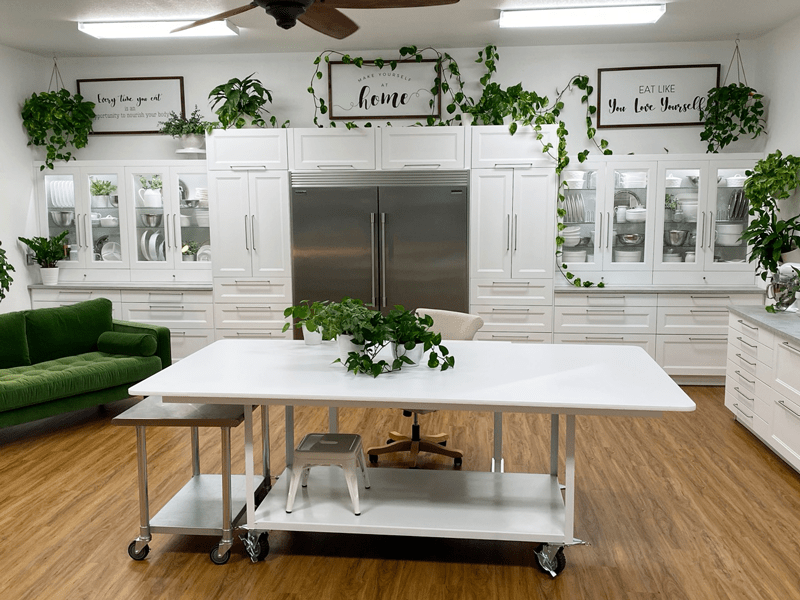

Growing Plants Under Fluorescent Lights
Today, I wanted to share with you my sacred space…my Studio Kitchen. This space continues to evolve with my interests and passions. When we moved into this house, this space was a two-car garage. Within a few years, we transformed it into a commercial kitchen for our food manufacturing business. After six years, it has been fully remodeled as the home of ALL my creativity. If you are interested, you can read all about the remodeling process (here).

The main purpose of this post is to show you how my plants are thriving in a space the is basically lit with all fluorescent lighting. As you look through the photos, pay attention to the placement of the plants, lights, windows, etc. I do have two west-facing windows and an east-facing door window. I don’t get any direct light through these windows. It’s very diffused, so I have to rely on my overhead studio lights to “feed” my plants. Fluorescent lights are ideal for plants with low to medium light requirements. Those of you who have a similar situation may find this post helpful and encouraging.
Here are the stats on this space
- The temperature in this space averages 68 degrees.
- 95% of the lighting is from overhead fluorescent lights.
- I don’t run a humidifier in this space.
- My studio is roughly 700 square feet.
- The heating-cooling system is separate from the house and is positioned at the top of the east wall.
- The only draft comes from the door that leads outside, which we rarely use, or the windows, when I open them from spring through fall.
- I use a ladder to water a handful of the plants in here.
- In the summer I feed my plants every 1-2 weeks (depending on the pot). In the winter, I feed about every 2-3 weeks.
- All the plants in space are real.
The different plants that are in this space.
Below, I am sharing some random photos as I spun around the room snapping photos. I hope you enjoyed this post. Please leave a comment below. blessings, amie sue
© AmieSue.com